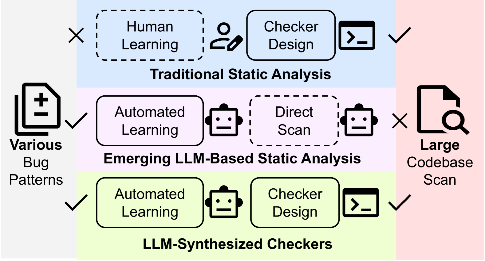

Over the past six months (since May 2025), I have been working with Vinay Banakar on the LinuxGuard project. It was a journey that took me deep into the intersection of Large Language Models and Systems security, taught me the rigors of academic research, and ultimately ended with a valuable lesson on the fast-paced nature of computer science.
The Spark
LinuxGuard started from a simple observation about the Linux kernel: today, the kernel suffers from many performance anti‑patterns and logical bugs. There are entire releases that focus almost entirely on bug fixes—missing defaults in switch cases, failure to return 0 on success, and so on.
Our core idea was: Can an LLM learn the kernel‑specific "DOs and DON’Ts" from commit history, and then help us create a set of checkers to automatically detect them?
Because the kernel uses its own C coding style that does not fully conform to typical C anti‑pattern definitions, standard tools often miss these nuances. We wanted to build a system that could "read" a fix and "write" a tool to prevent that bug forever.
Building the Pipeline

To make this concrete, I began by diving into LLVM and compilers. I discovered we could
generate checkers as plug‑ins, compiled directly into the Linux module of
clang‑tidy.
This became our vehicle for turning LinuxGuard into a practical tool.
However, it wasn't as simple as asking ChatGPT to "write a checker."
- Chain-of-Thought Prompting: I realized that a single API call couldn't reliably synthesize correct checkers. I built a pipeline that first analyzes the anti‑pattern and then generates the checker, using a one‑shot example for guidance.
- Self-Correction: Generated checkers often failed to compile. We introduced a self‑check, repair, and reset mechanism to handle this automatically.
- Agentic Validation: The trickiest part was precision. To fight false positives, we experimented with calling a second agent—an advanced, web‑based LLM—to act as a "reviewer" for the issues found by our checkers.
The "KNighter" Discovery
Research is a race. Ultimately and unfortunately, in early November we discovered a paper published at SOSP called KNighter. They proposed almost exactly the same idea and had already implemented it effectively.
I tried to identify critical improvements or new angles we could bring to build on KNighter, but given the uncertainty and the strength of their implementation, we eventually chose to stop the project. It was frustrating to stop a project we had invested so much time in, but it is part of the game.
Lessons Learned
Despite the outcome, I learned a great deal from Vinay throughout this process. We met weekly without interruption, using a shared doc and slide deck to stay aligned.
Vinay shared one piece of advice that really shaped how I view research:
"Don’t overthink or try to impress your mentor—that’s not what research is supposed to do. Research is conducted through solid steps and incremental developments. So your goal should be to keep moving at a steady pace."
This helped me understand the difference between industry and academia. We scaled up from highly specific pattern‑matching to general checkers, and discovered that simply merging commits doesn't work—you need clustering and selection.
Throughout all of this, Vinay has been both a mentor and a friend, always finding time for our meetings voluntarily, even when his schedule was already full. LinuxGuard may be over, but the skills I gained—in LLMs, compilers, and research methodology—are just beginning to pay off.